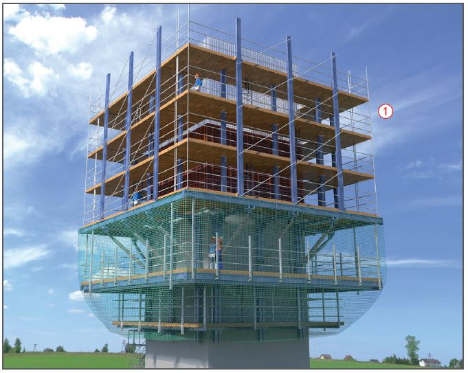
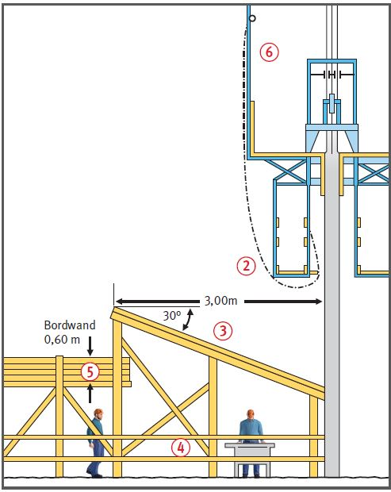

- an den Innenseiten, wenn nach der Gefährdungsbeurteilung eine Absturzsicherung erforderlich ist,
- an Förderöffnungen,
- an Betoniergerüsten und Flechterbühnen,
- im Bereich von Aussparungen und Wandöffnungen.
Gleit- und Kletterschalungen |


| 1 Radius des Gefahrbereichs um die jeweiligen Arbeitsplätze | ||
| jeweilige Höhe h der baul. Anlage |
erforderlicher Radius abhängig von h |
erforderlicher Mindestradius in m |
| h bis 60 | h/5 | 8,00 |
| h > 60 bis 100 | h/5 | 12,50 |
| h > 100 bis 150 | h/6 | 20,00 |
| h > 150 bis 200 | h/7 | 25,00 |
| h > 200 | h/8 | 30,00 |
Beispiel: Bei einer Bauwerkshöhe von 102 m beträgt der erforderl. Radius
h/6 = 17 m. Es ist jedoch der Mindestradius von 20 m einzuhalten.
07/2021